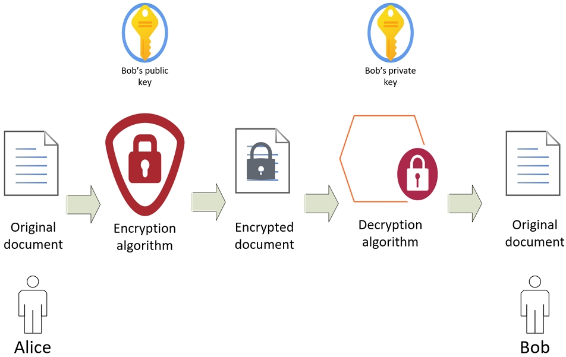
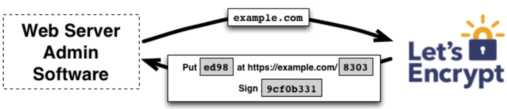

密码学（cryptography）：
必要性：应用程序经常需要通过不安全的网络进行通信，密码学为这些应用程序提供了保护通信内容不被未授权用户访问的方法。（To protect applications communication）
目标：
数据保密性（confidentiality）：确保只有被授权的人员才能访问和解读数据。
数据完整性（data integrity）：保证数据在传输或存储过程中未被更改或损坏。
认证（authentication）：验证通信双方的身份，确保消息发送者和接收者都是合法的。
不可否认性（nonrepudiation）：确保发送者不能否认发送信息，接收者不能否认收到信息。
常见网络攻击类型：
窃听（Eavesdropping）：未经授权的监听或拦截信息。
IP欺骗（IP Spoofing）：攻击者伪造IP地址，让人以为来自一个可信的源。
连接劫持（Connection Hijacking）：攻击者取代通信双方的连接，以获取或篡改数据。
篡改（Tampering）：在不被授权的情况下更改通信中的信息。
ISO模型是一个理论模型，由国际标准化组织（ISO）开发，用于促进不同系统之间的通信互操作性。OSI模型共有七层，从下到上分别是：
-物理层（Physical Layer）：
负责在物理媒体上实现原始的比特流传输，包括定义电气和物理规格。
-数据链路层（Data Link Layer）：
负责在相邻节点之间建立、维护和终止可靠的链接，提供帧的定界和同步以及错误检查和恢复。
-网络层（Network Layer）：
负责数据包从源到目的地的传输和路由选择，包括处理数据包在网络中的转发。
-传输层（Transport Layer）：
负责提供端到端的数据传输服务，确保数据的完整性，例如TCP和UDP协议。
-会话层（Session Layer）：
负责建立、管理和终止会话，这些会话支持数据交换。
-表示层（Presentation Layer）：
负责数据的表示、安全和压缩，确保数据在网络中传输前转换为适合传输的格式。
-应用层（Application Layer）：
为应用软件提供网络服务，处理特定应用程序的细节。
TCP/IP模型：TCP/IP模型是一个实际应用的网络模型，更贴近现代互联网的结构，通常被认为有四层，从下到上分别是：
-链路层（Link Layer）：
包括了OSI模型的物理层和数据链路层的功能，处理与物理网络的直接交互。
-互联网层（Internet Layer）：
相当于OSI模型的网络层，主要协议是IP（互联网协议），负责数据包的寻址和路由。
-传输层（Transport Layer）：
与OSI模型的传输层相同，主要协议有TCP（传输控制协议）和UDP（用户数据报协议）。
-应用层（Application Layer）：
包括了OSI模型的会话层、表示层和应用层的功能，提供网络服务给应用程序。
当应用使用SSL/TLS时，这个安全协议层位于应用层和传输层（特别是TCP）之间。SSL/TLS协议不改变下层的IP和TCP功能，但为上层的应用数据提供了安全特性，比如加密和身份验证，这常常在HTTPS通信中使用。这使得数据可以在互联网上传输，而无需担心被截取或篡改。
SSL（安全套接层）和TLS（传输层安全）是用于增强网络通信安全的协议。这些协议主要用于互联网通信，确保客户端和服务器之间的数据传输是私密和完整的。 它们在数据传输过程中提供加密，以防止数据在传输过程中被窃听或篡改。
SSL是一种较早的安全协议，被广泛用于Web浏览器和服务器之间的安全通信。当你在浏览器的地址栏中看到“https”而不是“http”，这通常意味着你的通信是通过SSL加密的,它在HTTP的基础上实现了SSL/TLS协议，确保在互联网上浏览网页的数据传输安全。SSL协议使用了证书和私钥/公钥加密技术来实现其安全功能。
TLS是SSL的后续者和更新版本，提供了更强的安全性和更有效的性能。TLS包括多个版本，其中TLS 1.3是最新和最安全的版本。尽管术语SSL仍然被广泛使用，实际上大多数安全通信都是通过TLS协议进行的。
SSL不仅限于HTTP，它可以用于加密任何基于TCP（传输控制协议）的协议。
我们为什么需要SSL/TLS：
1.加密协议难以实现（Cryptographic protocols are difficult to implement）：设计并实现一个既安全又可靠的加密协议是非常复杂的。
2.使用加密算法并不容易（Not easy to use cryptographic algorithms in a secure and reliable manner ）：即使是已经发明的加密算法，以一种安全可靠的方式使用它们也并不简单。
3.算法只是协议的构建块（The algorithms are just the building blocks in the protocols）：加密算法只是加密协议的基础组成部分，协议需要在这些算法的基础上构建。
4.加密协议需要覆盖并抵抗所有已知攻击（Cryptographic protocols need to cover and resist all known attacks）：它们必须设计得足够强大，以抵御各种各样的已知网络攻击。
5.攻击者可以对数据进行篡改（Attackers can perform tampering to data）：没有安全措施的数据在网络中传输时，攻击者可以对其进行篡改。
6.许多加密协议适用性有限（Many cryptographic protocols have limited applicability）：并非所有的加密协议都适用于所有场景，一些协议在特定应用中可能有局限性。
7.SSL 使得网络连接的安全更容易实现（SSL makes the security of network connection easier）：SSL简化了网络连接的安全性实施。
SSL/TLS 是目前基于 TCP 的连接提供最常见的安全服务。它为为 TCP 连接/通信增加了透明的保密性（加密通信，防止数据被窃听）、认证（确认通信双方的身份）和数据完整性（确保数据在传输过程中没有被篡改）。（“透明”意味着用户和应用程序可以不需要特别关注底层的加密细节，就能享受到加密带来的好处。）
SSL握手过程:
客户端向服务器发送ClientHello： 浏览器（客户端）向服务器发送一个ClientHello消息，它包含了客户端支持的SSL/TLS的版本，加密套件选项以及其他SSL参数。
服务器回复ServerHello给客户端： 服务器收到ClientHello后，选择一个双方都支持的加密套件和SSL/TLS版本，并发送一个ServerHello消息给客户端。
服务器发送证书给客户端： 服务器接着发送它的数字证书给客户端，该证书包括了服务器的公钥、证书的所有者、证书的过期日期以及服务器的完全限定域名。
浏览器验证证书并回送挑战： 客户端（浏览器）验证服务器的证书确保其合法性，然后使用服务器的公钥加密一个挑战消息（通常包含了一个随机数），并将这个加密的挑战发回给服务器。
服务器解密挑战并发送会话密钥： 服务器使用它的私钥解密客户端发来的挑战，验证了客户端的真实性。然后服务器可能会生成一个会话密钥，加密它，并发送给客户端。
安全连接建立： 以上步骤完成后，客户端和服务器都有了对方的验证信息和共享的会话密钥，从此以后的通信都将使用这个会话密钥进行对称加密，确保通信安全。
SSL/TLS协议下的中间人攻击（Man-in-the-Middle, MitM）是一种网络攻击，攻击者在通信双方之间插入自己，秘密地监听、拦截或篡改交换的信息。在这种攻击中，攻击者通常尝试截取、修改发送的信息或冒充一方与对方通信，而双方往往不知道有第三方在干扰他们的通信。
攻击者需要一份证书副本和私钥来伪装成已知的服务器：这意味着攻击者需要获取或伪造服务器的SSL/TLS证书和相应的私钥。
攻击者可以窃听服务器消息并展示攻击者的证书：在MitM攻击中，攻击者会拦截从客户端发往服务器的消息，同时将攻击者控制的证书代替真正的服务器证书发送给客户端。
伪造的证书看起来可能像是合法的：攻击者精心制作的伪造证书可能在外观上与真实的服务器证书难以区分，如果攻击者的证书未经客户端检查，那么客户端可能会接受这个伪造证书为真。
中间人攻击（MitM）：攻击者监听所有通信，客户端和服务器之间的每个消息都会通过攻击者，攻击者能够读取或者修改传递的信息。
SSL/TLS的局限性:
速度相对较慢：
使用SSL/TLS的连接由于涉及到密钥交换和加密握手过程，因此比普通的HTTP连接慢。特别是在建立连接的开始阶段，需要进行一系列的公钥操作来确立安全通道，这会导致延迟。
加解密的开销(overhead)：
数据的加密和解密需要额外的计算资源，这会引入性能开销，尤其是在处理大量数据时更为明显。
不适用于非面向连接的传输层协议：
SSL/TLS是为面向连接的协议设计的，如TCP。它不适用于非面向连接的协议，例如UDP，因为这些协议缺乏建立持久连接所需的特性。
不支持不可否认性(non-repudiation)：
SSL/TLS没有内建机制来处理不可否认性问题。如果另一方发送了一个带有无效签名的消息，SSL/TLS本身不提供验证消息发送者身份的功能。
不保护应用层(application)的漏洞：
SSL/TLS只保护数据传输的安全，不会防止应用程序自身的安全漏洞，如缓冲区溢出(buffer overflow)、SQL注入等。
只保护数据传输：
SSL/TLS保护的是数据在传输过程中的安全性，而不是数据发送前或接收后的存储安全。一旦数据离开了加密的通道，比如被存储在服务器上，SSL/TLS就不再提供保护。
OpenSSL库是一个与SSL相关的加密库和SSL工具包。能够实现多种加密算法，包括对称加密算法（如DES和AES）和非对称加密算法（如RSA）。
它最初是以SSLeay的名字被Eric A. Young和Tim J. Hudson创建的，开始于1995年。OpenSSL的第一个版本0.9.1c于1998年发布。
它不仅包含了加密功能，还提供了SSL协议的所有版本以及TLS。OpenSSL支持多种流行的对称加密、公钥加密和哈希算法。
OpenSSL是免费的，可以在Unix操作系统和Windows上使用。
它有一个伪随机数生成器(pseudorandom number generator)的特性，用于增加熵(increase entropy)，这对于加密操作至关重要，因为加密通常需要高质量的随机数。
OpenSSL的文件有：
.KEY 文件
这是一个包含私钥的文件。私钥是用于非对称加密的密钥，必须保密，它用于解密接收到的信息或生成数字签名。
.CSR 文件（证书签名请求 Certificate Signing Request）
这个文件包含了请求证书的信息，需要用私钥签名后发送给证书颁发机构（CA）。CA将使用这个请求来生成一个与公钥关联的认证的数字证书。
.CRT 文件（证书缩写 Certificate abbrev）
这是一个安全证书文件，包含了公钥并由证书颁发机构签名。它用于在各方之间建立安全连接时验证实体的身份。
.PEM 文件（Privacy Enhanced Mail）
这种格式的文件可能包含公共证书或整个证书链。证书链可以包括公钥、私钥和一个或多个证书。PEM文件是一种多用途的证书文件格式，可用于多种安全应用。
.CRL 文件（证书吊销列表 Certificate revocation list）
证书吊销列表是一个包含了被撤销的证书序列号的列表。当证书在到期之前不再可信时，它们会被添加到CRL中。客户端在验证证书时会检查证书是否在CRL中，以确保不使用已被吊销的证书。
几种针对SSL/TLS协议的已知攻击方式：
降级攻击（Downgrade attack）
在这种攻击中，攻击者尝试强制通信双方使用较旧、已知存在安全漏洞的协议版本或加密算法。攻击者通过各种手段（如中间人攻击）干预SSL/TLS握手过程，使得通信双方不能使用最强的加密技术，而是使用较弱的版本，使加密通信容易被破解。
CRIME攻击（Compression Ratio Info-leak Made Easy）
CRIME攻击利用了HTTPS连接中使用数据压缩的弱点。攻击者通过观察压缩后的HTTPS响应的大小，可以获取到关于明文数据的信息。比如，攻击者可能能够从压缩比率中推断出某些数据，这可以帮助攻击者破解会话令牌或其他敏感信息。
BREACH攻击（Browser Reconnaissance and Exfiltration via Adaptive Compression of Hypertext）
BREACH攻击同样是针对数据压缩的漏洞，但这次是在HTTP层上实现的。在BREACH攻击中，攻击者可以观察受害者发送的HTTP请求，并强迫受害者向一个受到攻击者控制的或者存在漏洞的服务器发送请求。通过这种方式，攻击者能够窥视加密流量，并最终获取敏感信息。
TCP序列号预测攻击(TCP sequence prediction attack)
TCP序列号预测攻击是一种网络攻击技术，它利用TCP连接中的序列号的可预测性。在TCP连接中，序列号用于保证数据包的有序性和数据完整性，因此，每个TCP段都包含一个序列号，用于追踪从发送方到接收方的字节流的状态。
攻击者首先通过嗅探网络流量来确定TCP会话中的序列号。在掌握了序列号的基础上，攻击者尝试预测后续的序列号，然后在客户端和服务器之间的通信中插入伪造的TCP数据包。
如果攻击者成功预测了正确的序列号，伪造的数据包就可能被接收方接受为合法的数据包。
加密算法的类型（Types of cryptographic algorithms）：
对称加密算法（symmetric key encryption）：对称加密算法使用相同的密钥进行数据的加密和解密。这意味着发送方和接收方必须事先共享密钥，并且保证这个密钥是安全的。对称加密算法通常运行速度快，适用于大量数据的加密。
优点：
高效、快速：适合加密大量数据（如流媒体）。
更简单：包括的计算步骤和工作量较少。
更适合嵌入式系统和物联网工业设备（embedded systems and IoT industrial devices）：在一些资源受限的环境中尤其适用。
缺点：
单点故障（Single Point of Failure）：只能用单一密钥进行加密和解密，必须确保密钥安全！
有限的认证（Limited Authentication）：只有拥有密钥的人才能解密消息。
密钥管理：在有很多用户的大型环境中，密钥的吊销和轮换（Revoke, rotation）很困难。
非对称加密算法（asymmetric key encryption）：非对称加密算法，也称为公钥加密算法(Public key encryption)，使用一对密钥：一个公钥和一个私钥。公钥可公开分享用于加密数据，而私钥必须保密，用于解密数据。非对称加密算法通常用于密钥交换、数字签名和确保通信安全。

优点：
分发（Distribution）：公钥是公开的，因此在不安全的通道上也可以安全分发，这消除了对称加密中密钥交换的风险。但这依赖于对公钥的真实性有一个可信任的保证，通常是通过可信第三方，即证书颁发机构(CA)。
不可否认性（Non-Repudiation）：非对称加密可以结合数字签名使用，因此发送者不能否认他们发送了消息。当你使用私钥对信息进行签名时，任何持有公钥的人都可以验证签名，但只有持有私钥的人能生成签名，这就确保了消息的不可否认性。
认证（Authentication）：第三方（如证书颁发机构）可以验证与公钥一起发送的证书，以证实密钥的有效性。这就允许信任链的建立，确保了密钥的真实性和所进行通信的安全性。
缺点：
速度慢：对于大型消息，通常速度较慢且计算密集。
不适合大数据：通常用于密钥交换协议。
密钥尺寸：产生的密钥明显大于对称密钥（增加了带宽和存储（bandwidth and storage）要求）。
加密散列函数（Cryptographic Hash Functions）：加密散列函数（也被称为密码学哈希函数）是一种特殊类型的算法，它们将任何长度的输入数据转换成固定长度的输出值，通常被称为哈希值或摘要（message digest）。哈希函数的特点是它们是单向的，这意味着无法从哈希值逆向推导出原始输入数据。
加密哈希函数也称为校验和算法(Checksum Algorithms)。例如，MD5 生成 128 位的输出，而 SHA-1 生成 160 位的输出。这里提到 SHA-1 相对于 MD5 是更安全的，意指 SHA-1 的输出位数更多，理论上更难以破解。
哈希函数具有敏感性，即输入数据的任何微小变化都会导致输出的哈希值发生显著变化，这被称为雪崩效应。这使得哈希函数特别适用于检测数据是否被篡改（篡改）。
寻找两个相同校验和的输入是不可能的。
哈希函数是单向（one-way）的，意味着从输出的哈希值几乎不可能算法性地重构出原始输入数据。这是因为哈希过程涉及大量不可逆的操作，如模运算和位移。
对于给定的对称密钥长度，哈希函数生成的摘要长度是其两倍。这通常提供了更高的安全性，因为更长的哈希值更难以通过暴力攻击破解。
消息认证码（MACs，Message Authentication Codes）是一种用于验证消息完整性和数据的来源的加密技术。它可以保证消息在传输过程中未被篡改，并确认消息是由合法的发送者发送的。MAC通常结合了加密技术和密钥管理，确保只有持有正确密钥的参与者才能验证消息的真实性。
工作原理：
在发送消息时，发送方会使用共享密钥和消息内容生成一个MAC值。这个过程可以利用对称密钥加密算法或哈希函数来实现。
发送方将这个MAC值附加到消息上，然后将它们一起发送给接收方。
接收方收到消息和MAC值后，使用同样的密钥和相同的算法对接收到的消息重新生成MAC值。
接收方比较自己生成的MAC值和接收到的MAC值。如果两者相同，那么可以确认消息未被篡改且确实来自预期的发送者。
数字签名（Digital signatures）是一种用于验证电子文档真实性和完整性的技术。它允许接收者确认文件确实来自声称的发送者（认证），并且自发送后未被修改过（完整性）。数字签名还提供了不可否认性，即发送者不能否认已经签名的文档。
工作原理：
在传统的非对称加密应用中，发送者会用接收者的公钥来加密消息，然后接收者使用自己的私钥来解密。这确保了只有特定的接收者可以读取消息内容。然而，在数字签名的场景中，我们翻转了这个过程：
1.签名生成：发送者使用自己的私钥对消息的哈希值进行加密。这里的加密实际上是对哈希值的数字签名，意在证明消息确实是由拥有私钥的发送者发出的，因为只有他们才能访问这个私钥。
2.签名验证：接收者用发送者的公钥对数字签名进行解密。由于非对称加密的性质，用私钥加密的内容只能用对应的公钥来解密。如果解密的结果（即发送者生成的哈希值）和接收者对原始消息生成的哈希值一致，那么证明了消息在传输中未被篡改，并确认了消息是由持有私钥的发送者发送的。
数字签名的特点：
- 数字签名是公钥加密的一种形式
- 用于提供数字身份验证和加密（digital identity authentication and encryption）
- 公钥和私钥可互换（interchangeable）
- 数字签名速度非常慢
- 使用 1,024 位 或更高，以确保安全
- 发件人用私钥签署信息
- 接收者使用发送者的公钥来验证发送者已签署该消息
几种加密算法的优缺点：
数据加密标准（Data Encryption Standard, DES）
优点：DES 是最早被广泛使用的加密标准之一。
缺点：由于其较小的密钥长度（56位），现在不再被认为是安全的。
三重数据加密标准（Triple DES, 3DES）
优点：3DES 通过三次应用 DES 算法（168位密钥），增强了加密的强度。
缺点：与其他加密算法相比，3DES 的加密过程消耗的时间更长。
高级加密标准（Advanced Encryption Standard, AES）
优点：提供强大的安全性，计算资源和内存使用高效。支持多种密钥长度，灵活性高。
缺点：易受侧信道攻击（side-channel attacks）的影响。
RSA（Rivest-Shamir-Adleman）
优点：广泛用于安全的密钥交换、数字签名和公钥加密。通过数字签名提供了内置的不可否认性机制（built-in mechanisms for non-repudiation）。
缺点：为抵抗攻击需要使用大的RSA密钥，加密过程耗时较长。
椭圆曲线密码学（Elliptic Curve Cryptography, ECC）
优点：提供了与较大密钥相当的强安全性，同时密钥尺寸较小。在带宽和计算资源方面效率高，适用于物联网（IoT）设备。
缺点：实现复杂，需要小心实施。
如何选择密钥长度：
考虑加密算法（Consider the Encryption Algorithm）：
公钥加密算法中的密钥长度通常很大，远大于对称加密算法中的密钥。例如，512位的密钥已经太弱，2048位的密钥可能会太慢。
安全需求（Security Requirements）：
考虑被加密数据的敏感性和潜在威胁。
数据的寿命（Lifespan of the Data）：
考虑你需要数据保持安全的时间长度（是否需要更长的密钥长度？）。
法规要求（Regulation）：
确保符合相关法规对最小密钥长度的要求（如ISO 27001）。
保持平衡（Maintain balance）：
更长的密钥提供更高的安全性，但可能增加计算开销并导致性能变慢。
公钥基础设施（Public Key Infrastructure， PKI）
公钥基础设施（PKI）是一种确保公钥与身份安全绑定的系统，它通过使用证书实现这一点。 在PKI系统中，数据加密和解密过程是安全的，因为只有与公钥对应的私钥才能解密数据。此外，结合哈希函数创建的数字签名可以确保数据在传输过程中未被篡改。 证书由颁发者的私钥签名，并包含验证身份所需的所有信息，从而为公钥提供可信任的验证源。这整个机制提高了网络通信的安全性，确保了数据的完整性和通信双方的身份验证。
证书颁发机构（Certification Authorities, CA）是一种信任机构，负责在公钥基础设施（PKI）框架中颁发数字证书。CA的核心职责是验证实体的身份，并为其颁发证书，证书中包含了实体的公钥和其他身份信息。这些证书使得其他方可以验证证书持有者的身份，并确保通过公钥加密的数据只能由相应的私钥持有者解密。
证书颁发机构（CA）分为私有和公共两种类型：
-私有CA：为特定组织（如一个公司或机构）本地颁发证书，这些证书被组织内部成员信任。
-公共CA：为公众成员颁发证书，必须获得广泛公众的信任，通常作为第三方证书颁发机构。
-信任问题：CA必须得到信任，才能传递信任。CA颁发的证书包含公钥，这些公钥是公开分发的，以确保证书的有效性和可信度。
Let's Encrypt 是一个公共证书颁发机构（CA），由互联网安全研究小组（ISRG）免费提供，旨在自动化地为HTTPS服务器颁发受浏览器信任的证书。要使用Let's Encrypt的服务，你需要拥有一个有效的注册域名，并在Web服务器上安装证书管理代理（例如Certbot）。Let's Encrypt致力于提供安全的TLS最佳实践帮助管理员保护他们的网站，并提供透明度，即颁发的证书是公开可查的，任何人都可以检查。
Let's Encrypt CA使用公钥识别服务器管理员。服务器上安装的代理生成新的密钥对，并通知Let's Encrypt服务器控制某个域名。Let's Encrypt CA会发起一系列验证挑战，例如：提供DNS记录、提供一个HTTP资源、使用私钥签名一个随机数（nonce）。这些挑战旨在验证服务器对所声明域名的控制权，确保证书的合法性和安全性。通过这样的验证流程，Let's Encrypt确保只有域名的合法控制者能够获取和续签证书。
代理完成了证书颁发机构给出的验证任务后，CA将验证随机数（nonce）的签名和任务。一旦验证成功，代理就有权请求、更新和吊销证书。
代理生成一个包含公钥签名的证书签名请求（CSR）。代理使用该域名的私钥对整个CSR进行签名，并请求Let's Encrypt颁发证书，其中包含了公钥。这是证书颁发过程的一部分，确保了请求的证书与特定域名和其私钥的所有者相关联。这种签名过程帮助CA验证请求者确实控制了域名，并且私钥的安全性得到了保障。
Let's Encrypt的证书颁发机构（CA）收到了服务器代理构建的证书签名请求（CSR），然后验证请求中的两个签名：CSR的签名和之前完成挑战时的签名。一旦验证通过，证明了请求者对域名的控制权，Let's Encrypt CA便为该域名颁发数字证书，并将这个证书发送给服务器。这样服务器就获得了一个认证的证书，可以用来在其域名上建立安全的HTTPS连接。
撤销证书的工作原理与颁发类似，服务器管理员软件对撤销请求进行签名，然后提交给Let's Encrypt CA。Let's Encrypt CA验证这个请求，并授权撤销该证书。一旦证书被撤销，浏览器就不再接受这个无效的证书，以保证不再建立基于被撤销证书的安全连接。这样的机制确保了一旦证书被发现或被认为不安全时，可以迅速地停用，从而保护用户和服务器之间的交互不受影响。
PGP（Pretty Good Privacy）是一种数据加密和解密程序，可提供电子数据通信的隐私和认证。后来成为了一个开放标准，即OpenPGP，它现在是信息安全交换的实际标准。PGP能够对在线消息进行加密，包括电子邮件、文本文件等。它使用近似军用级别的对称和非对称加密技术，并依赖于私钥（需要安全保管）、完整性检查、消息认证和签名证书来确保安全性。由于PGP在处理时相对较慢，所以通常不考虑将其用于应用程序中。